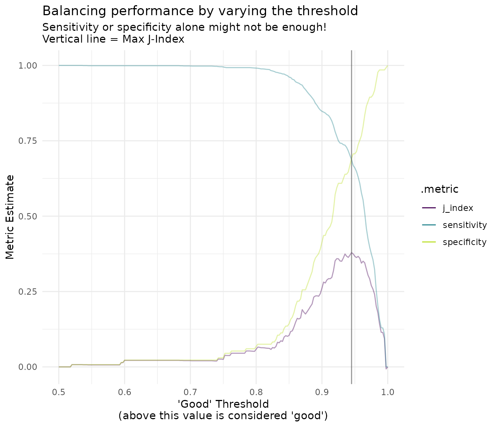

vignettes/where-to-use.Rmd
where-to-use.RmdAn obvious question regarding probably might be: where does this fit in with the rest of the tidymodels ecosystem? Like the other pieces of the ecosystem, probably is designed to be modular, but plays well with other tidymodels packages.
Regarding placement in the modeling workflow, probably best fits in as a post processing step after the model has been fit, but before the model performance has been calculated.
As an example, we’ll use parsnip to fit a logistic regression on some Lending Club loan data, and then use probably to investigate what happens to performance when you vary the threshold of what a “good” loan is.
library(parsnip)
library(probably)
library(dplyr)
library(rsample)
library(modeldata)
data("lending_club")
# I think it makes more sense to have "good" as the first level
# By default it comes as the second level
lending_club <- lending_club %>%
mutate(Class = relevel(Class, "good"))
# There are a number of columns in this data set, but we will only use a few
# for this example
lending_club <- select(lending_club, Class, annual_inc, verification_status, sub_grade)
lending_club
#> # A tibble: 9,857 x 4
#> Class annual_inc verification_status sub_grade
#> <fct> <dbl> <fct> <fct>
#> 1 good 35000 Not_Verified C4
#> 2 good 72000 Verified C1
#> 3 good 72000 Source_Verified D1
#> 4 good 101000 Verified C3
#> 5 good 50100 Source_Verified A4
#> 6 good 32000 Source_Verified B5
#> 7 good 65000 Not_Verified A1
#> 8 good 188000 Not_Verified B2
#> 9 good 89000 Source_Verified B3
#> 10 good 48000 Not_Verified C2
#> # … with 9,847 more rowsLet’s split this into 75% training and 25% testing for something to predict on.
# 75% train, 25% test
set.seed(123)
split <- initial_split(lending_club, prop = 0.75)
lending_train <- training(split)
lending_test <- testing(split)Before we do anything, let’s look at the counts of what we are going to be predicting, the Class of the loan.
count(lending_train, Class)
#> # A tibble: 2 x 2
#> Class n
#> <fct> <int>
#> 1 good 7008
#> 2 bad 384Clearly there is a large imbalance here with the number of good and bad loans. This is probably a good thing for the bank, but poses an interesting issue for us because we might want to ensure we are sensitive to the bad loans and are not overwhelmed by the number of good ones. One thing that we might do is downsample the number of good loans so that the total number of them is more in line with the number of bad loans. We could do this before fitting the model using recipes::step_downsample(), but for now, let’s continue with the data unchanged.
We’ll use parsnip’s logistic_reg() to create a model specification for logistic regression, set the engine to be glm and then actually fit the model using our data and the model formula.
logi_reg <- logistic_reg()
logi_reg_glm <- logi_reg %>% set_engine("glm")
# A small model specification that defines the type of model you are
# using and the engine
logi_reg_glm
#> Logistic Regression Model Specification (classification)
#>
#> Computational engine: glm
# Fit the model
logi_reg_fit <- fit(
logi_reg_glm,
formula = Class ~ annual_inc + verification_status + sub_grade,
data = lending_train
)
logi_reg_fit
#> parsnip model object
#>
#> Fit time: 242ms
#>
#> Call: stats::glm(formula = Class ~ annual_inc + verification_status +
#> sub_grade, family = stats::binomial, data = data)
#>
#> Coefficients:
#> (Intercept) annual_inc
#> -5.670e+00 1.915e-06
#> verification_statusSource_Verified verification_statusVerified
#> 4.324e-02 3.364e-01
#> sub_gradeA2 sub_gradeA3
#> 9.508e-02 1.149e+00
#> sub_gradeA4 sub_gradeA5
#> -5.591e-02 1.510e+00
#> sub_gradeB1 sub_gradeB2
#> 1.637e+00 1.177e+00
#> sub_gradeB3 sub_gradeB4
#> 1.467e+00 1.975e+00
#> sub_gradeB5 sub_gradeC1
#> 2.125e+00 2.234e+00
#> sub_gradeC2 sub_gradeC3
#> 2.176e+00 2.380e+00
#> sub_gradeC4 sub_gradeC5
#> 2.724e+00 3.084e+00
#> sub_gradeD1 sub_gradeD2
#> 3.105e+00 2.816e+00
#> sub_gradeD3 sub_gradeD4
#> 3.165e+00 3.125e+00
#> sub_gradeD5 sub_gradeE1
#> 3.507e+00 3.621e+00
#> sub_gradeE2 sub_gradeE3
#> 3.272e+00 3.542e+00
#> sub_gradeE4 sub_gradeE5
#> 3.428e+00 3.468e+00
#> sub_gradeF1 sub_gradeF2
#> 3.717e+00 4.096e+00
#> sub_gradeF3 sub_gradeF4
#> 3.681e+00 3.662e+00
#> sub_gradeF5 sub_gradeG1
#> 3.586e+00 4.168e+00
#> sub_gradeG2 sub_gradeG3
#> 4.162e+00 4.422e+00
#> sub_gradeG4 sub_gradeG5
#> 5.102e+00 -8.226e+00
#>
#> Degrees of Freedom: 7391 Total (i.e. Null); 7354 Residual
#> Null Deviance: 3019
#> Residual Deviance: 2716 AIC: 2792The output of the parsnip fit() call is a parsnip model_fit object, but the underlying print method for the glm fit is used.
Now let’s predict on our testing set, and use type = "prob" to get class probabilities back rather than hard predictions. We will use these with probably to investigate performance.
predictions <- logi_reg_fit %>%
predict(new_data = lending_test, type = "prob")
head(predictions, n = 2)
#> # A tibble: 2 x 2
#> .pred_good .pred_bad
#> <dbl> <dbl>
#> 1 0.969 0.0311
#> 2 0.965 0.0353
lending_test_pred <- bind_cols(predictions, lending_test)
lending_test_pred
#> # A tibble: 2,465 x 6
#> .pred_good .pred_bad Class annual_inc verification_status sub_grade
#> <dbl> <dbl> <fct> <dbl> <fct> <fct>
#> 1 0.969 0.0311 good 32000 Source_Verified B5
#> 2 0.965 0.0353 good 73400 Source_Verified C2
#> 3 0.960 0.0405 good 175000 Source_Verified B5
#> 4 0.972 0.0276 good 70000 Not_Verified B4
#> 5 0.874 0.126 good 36000 Source_Verified E1
#> 6 0.944 0.0560 good 40000 Source_Verified C4
#> 7 0.996 0.00385 good 60000 Not_Verified A1
#> 8 0.951 0.0486 good 65000 Verified C1
#> 9 0.963 0.0370 good 52000 Verified B4
#> 10 0.983 0.0173 good 61000 Verified B2
#> # … with 2,455 more rowsWith our class probabilities in hand, we can use make_two_class_pred() to convert these probabilities into hard predictions using a threshold. A threshold of 0.5 just says that if the predicted probability is above 0.5, then classify this prediction as a “good” loan, otherwise, bad.
hard_pred_0.5 <- lending_test_pred %>%
mutate(.pred = make_two_class_pred(.pred_good, levels(Class), threshold = .5)) %>%
select(Class, contains(".pred"))
hard_pred_0.5 %>%
count(.truth = Class, .pred)
#> # A tibble: 2 x 3
#> .truth .pred n
#> <fct> <clss_prd> <int>
#> 1 good good 2332
#> 2 bad good 133Hmm, with a 0.5 threshold, almost all of the loans were predicted as “good”. Perhaps this has something to do with the large class imbalance. On the other hand, the bank might want to be more stringent with what is classified as a “good” loan, and might require a probability of 0.75 as the threshold.
hard_pred_0.75 <- lending_test_pred %>%
mutate(.pred = make_two_class_pred(.pred_good, levels(Class), threshold = .75)) %>%
select(Class, contains(".pred"))
hard_pred_0.75 %>%
count(.truth = Class, .pred)
#> # A tibble: 4 x 3
#> .truth .pred n
#> <fct> <clss_prd> <int>
#> 1 good good 2320
#> 2 good bad 12
#> 3 bad good 129
#> 4 bad bad 4In this case, 4 of the bad loans were correctly classified as bad, but more of the good loans were also misclassified as bad now. There is a tradeoff here, which can be somewhat captured by the metrics sensitivity and specificity. Both metrics have a max value of 1.
library(yardstick)
#> For binary classification, the first factor level is assumed to be the event.
#> Use the argument `event_level = "second"` to alter this as needed.
# Currently yardstick can't deal with the class_pred objects that come from
# probably, but it will be able to soon!
hard_pred_0.5 <- mutate(hard_pred_0.5, .pred = as.factor(.pred))
hard_pred_0.75 <- mutate(hard_pred_0.75, .pred = as.factor(.pred))
sens(hard_pred_0.5, Class, .pred)
#> # A tibble: 1 x 3
#> .metric .estimator .estimate
#> <chr> <chr> <dbl>
#> 1 sens binary 1
spec(hard_pred_0.5, Class, .pred)
#> # A tibble: 1 x 3
#> .metric .estimator .estimate
#> <chr> <chr> <dbl>
#> 1 spec binary 0
sens(hard_pred_0.75, Class, .pred)
#> # A tibble: 1 x 3
#> .metric .estimator .estimate
#> <chr> <chr> <dbl>
#> 1 sens binary 0.995
spec(hard_pred_0.75, Class, .pred)
#> # A tibble: 1 x 3
#> .metric .estimator .estimate
#> <chr> <chr> <dbl>
#> 1 spec binary 0.0301In this example, as we increased specificity (by capturing those 4 bad loans with a higher threshold), we lowered sensitivity (by incorrectly reclassifying some of the good loans as bad). It would be nice to have some combination of these metrics to represent this tradeoff. Luckily, j_index is exactly that.
\[ j\_index = sens + spec - 1 \]
j_index has a maximum value of 1 when there are no false positives and no false negatives. It can be used as justification of whether or not an increase in the threshold value is worth it. If increasing the threshold results in more of an increase in the specificity than a decrease in the sensitivity, we can see that with j_index.
j_index(hard_pred_0.5, Class, .pred)
#> # A tibble: 1 x 3
#> .metric .estimator .estimate
#> <chr> <chr> <dbl>
#> 1 j_index binary 0
j_index(hard_pred_0.75, Class, .pred)
#> # A tibble: 1 x 3
#> .metric .estimator .estimate
#> <chr> <chr> <dbl>
#> 1 j_index binary 0.0249Now, this is not the only way to optimize things. If you care about low false positives, you might be more interested in keeping sensitivity high, and this wouldn’t be the best way to tackle this problem. But for now, let’s see how we can use probably to optimize the j_index.
threshold_perf() will recalculate a number of metrics across varying thresholds. One of these is j_index.
threshold_data <- lending_test_pred %>%
threshold_perf(Class, .pred_good, thresholds = seq(0.5, 1, by = 0.0025))
threshold_data %>%
filter(.threshold %in% c(0.5, 0.6, 0.7))
#> # A tibble: 12 x 4
#> .threshold .metric .estimator .estimate
#> <dbl> <chr> <chr> <dbl>
#> 1 0.5 sens binary 1
#> 2 0.6 sens binary 0.999
#> 3 0.7 sens binary 0.998
#> 4 0.5 spec binary 0
#> 5 0.6 spec binary 0.0226
#> 6 0.7 spec binary 0.0226
#> 7 0.5 j_index binary 0
#> 8 0.6 j_index binary 0.0217
#> 9 0.7 j_index binary 0.0208
#> 10 0.5 distance binary 1
#> 11 0.6 distance binary 0.955
#> 12 0.7 distance binary 0.955With ggplot2, we can easily visualize this varying performance to find our optimal threshold for maximizing j_index.
library(ggplot2)
threshold_data <- threshold_data %>%
filter(.metric != "distance") %>%
mutate(group = case_when(
.metric == "sens" | .metric == "spec" ~ "1",
TRUE ~ "2"
))
max_j_index_threshold <- threshold_data %>%
filter(.metric == "j_index") %>%
filter(.estimate == max(.estimate)) %>%
pull(.threshold)
ggplot(threshold_data, aes(x = .threshold, y = .estimate, color = .metric, alpha = group)) +
geom_line() +
theme_minimal() +
scale_color_viridis_d(end = 0.9) +
scale_alpha_manual(values = c(.4, 1), guide = "none") +
geom_vline(xintercept = max_j_index_threshold, alpha = .6, color = "grey30") +
labs(
x = "'Good' Threshold\n(above this value is considered 'good')",
y = "Metric Estimate",
title = "Balancing performance by varying the threshold",
subtitle = "Sensitivity or specificity alone might not be enough!\nVertical line = Max J-Index"
)
It’s clear from this visual that the optimal threshold is very high, exactly 0.945. This is pretty high, so again, this optimization method won’t be useful for all cases. To wrap up, here are all of the test set metrics for that threshold value.